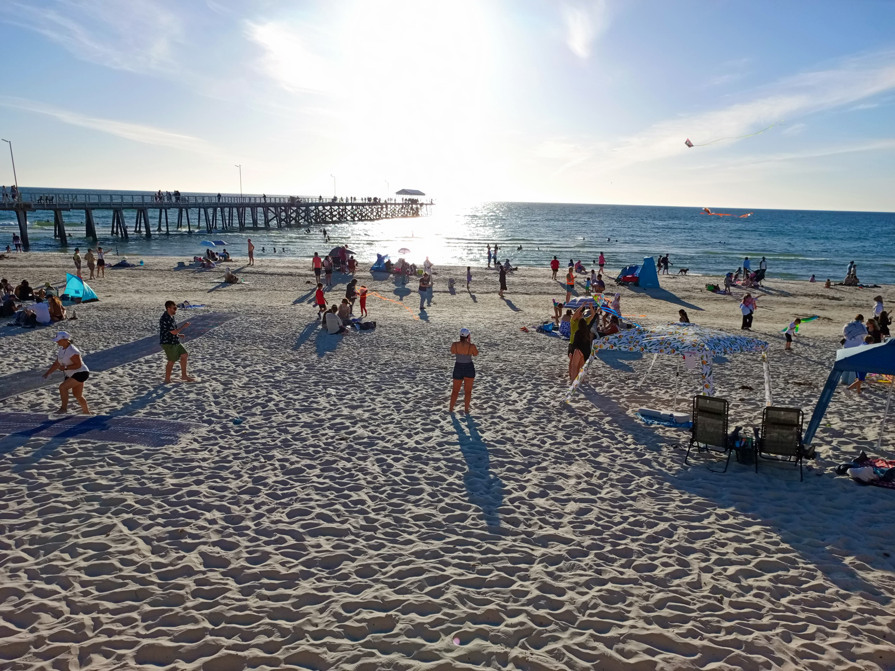
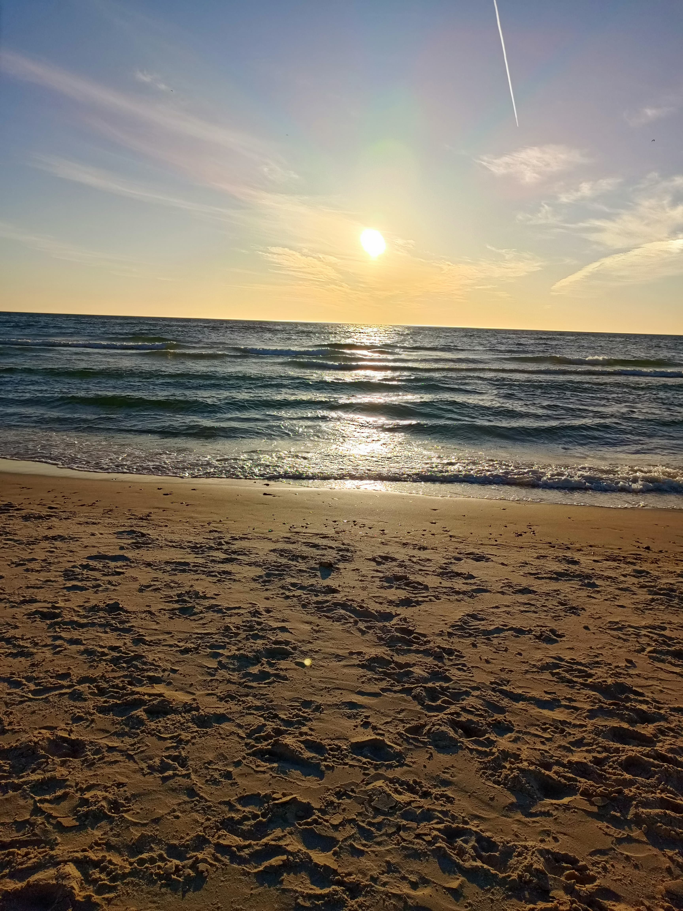
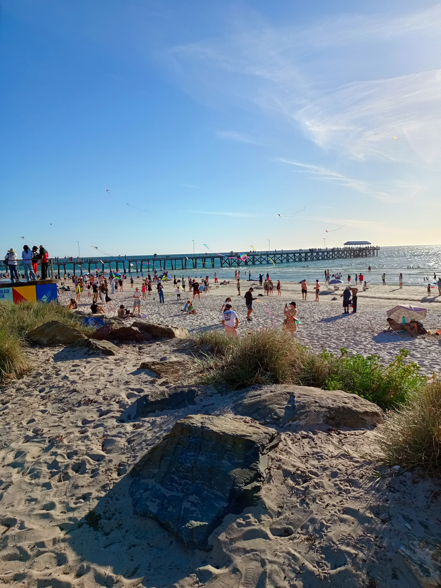
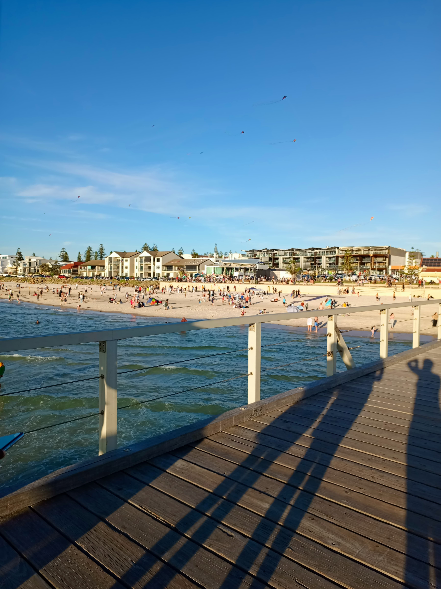
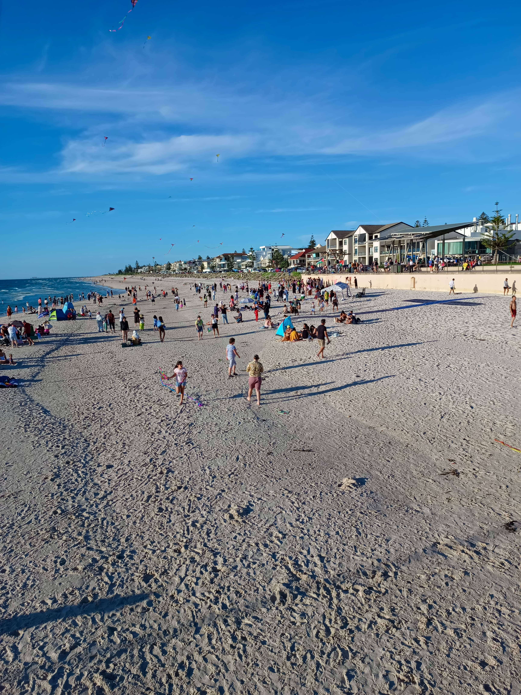
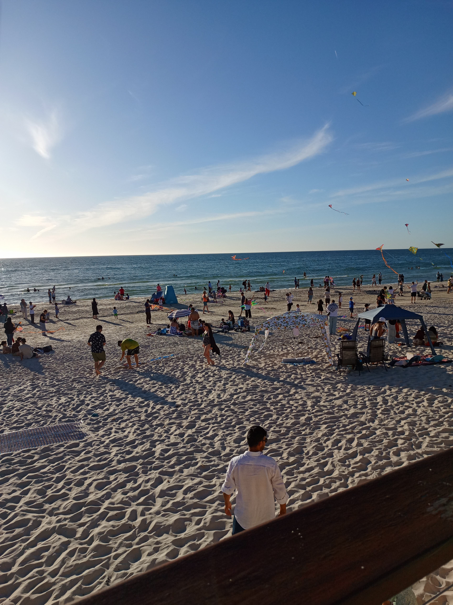

Henley Beach is more than just a picturesque shoreline—it's a living narrative of nature, culture, and community spirit. This project, Henley Beach: Tides of Time, weaves a story of dynamic coastal landscapes and deep-rooted Indigenous connections.
The video immerses viewers in both the visible beauty and the often-unseen spiritual and historical layers of this iconic Adelaide beach. With a poetic narrative, contemplative visuals, and authentic sound design, it invites audiences to pause, reflect, and reconnect—with place, with time, and with heritage
Watch nowWhen creating my video and website, I began by brainstorming the emotional message I wanted to convey through the Henley Beach project. I aimed to evoke a sense of calm, nostalgia, and appreciation for natural beauty. For the video, I collected original footage and still images of the beach, paying close attention to lighting, framing, and movement to tell a visual story. Music and voiceover were added to support the emotional tone and guide the audience’s experience.
For the website, my goal was to complement the video and extend its impact. I used colours, typography, and layout choices that aligned with the beach theme—opting for a clean, open design that reflected the tranquility of the location. Research has shown that visual aesthetics play a key role in users’ emotional reactions and overall engagement with websites (Lavie & Tractinsky, 2004). I experimented with different colour palettes and button styles, made layout adjustments for responsiveness, and added interactive elements like accordions to improve user experience.
Throughout the process, I constantly refined both the aesthetic and technical elements, taking feedback into account and ensuring consistency across all components of the project.
This assignment has provided me with more technical and creative confidence. The website and video projects have allowed me to further understand storytelling using visual media and learn about how design decisions can affect a viewer's emotional experience. I also gained knowledge on balancing usability and creativity—making sure that content is not just compelling but also accessible and functional.
Some of the key skills I’ve gained include video editing, audio layering, basic HTML and CSS, responsive web design, and the importance of consistent branding. According to Krug (2014), usability and simplicity are essential in web design, and this was something I actively practiced. Beyond the tools, I’ve learned how to plan and execute a media project from concept to completion, which has helped me better understand the creative process as a whole.
In the future, I plan to apply these skills to a range of digital media projects. Whether I'm creating promotional videos, personal narratives, or client websites, the capacity to integrate narrative and design will be crucial. The technical proficiency—particularly responsive design, accessibility features, and multimedia integration—will enable me to produce digital content that is not just visually effective but also easy to use.
I also feel more confident in my ability to plan projects, take creative risks, and troubleshoot challenges along the way. These are all qualities I know will be valuable whether I pursue work in web development, content creation, or digital marketing. As digital media continues to evolve, having both creative and technical fluency is critical for future-proofing my skillset (McStay, 2018).
Krug, S. (2014). Don't make me think, revisited: A common sense approach to Web usability (3rd ed.). New Riders.
Lavie, T., & Tractinsky, N. (2004). Assessing dimensions of perceived visual aesthetics of web sites. International Journal of Human-Computer Studies, 60(3), 269–298. https://doi.org/10.1016/j.ijhcs.2003.09.002
McStay, A. (2018). Emotional AI: The rise of empathic media. SAGE Publications.
00:00 – 00:07
[Opening scene: Afternoon sunlight reflecting off the sea, waves gently rolling in under a glowing sky]
00:07 – 00:16
There's a place where time slows down, where the sea breathes for you.
[Scene: Wide, peaceful shots of the ocean and beach horizon]
00:16 – 00:25
Nestled along the South Australian coast, Henley Beach is more than sand and sea—it's a vibe, it's a lifestyle.
[Scene: Shot of people walking, relaxing on the beach]
00:36 – 00:51
This place holds my quiet thoughts, the sunsets I chased, the mornings I needed peace.
[Scene: Slow pans of the shoreline, someone looking out at the waves, afternoon light soft on the water]
00:51 – 01:09
Here, strangers share smiles, families grow memories.
[Scene: Families enjoying the beach, kids playing near the tide, couples walking hand-in-hand]
01:09 – 01:30
The waves teach you to breathe, to notice, not to just be.
[Scene: Calm footage of the tide washing in and out, people quietly observing the ocean]
01:30 – 01:34
When life gets too loud, I return here to remember what matters.
[Closing scene: People strolling near the water’s edge, then fading to just the rolling waves from the sea]
Images from my video.

Golden sunset casting warm light over Henley Beach shoreline, waves gently lapping the sand.

Wide-angle view of Henley Beach showing scattered visitors, highlighting the scale and serenity of the coast.

A close-up look at the sand and shoreline, capturing the natural beauty up close.

Relaxation by the Sea – Beachgoers enjoying the warmth and calm of Henley Beach under the afternoon sun

People relaxing by the shore as vibrant kites soar above the beach on a sunny day.
I’m currently studying Introduction to Digital Media at the University of South Australia. My passion lies in combining environmental storytelling with visual design to create immersive experiences. I'm particularly interested in cultural heritage, sustainable tourism, and media production that makes an impact.
For more information about my work please get in contact!
Get in contact{kind=link}
{kind=link}
{kind=link}
{kind=link}
{kind=link}
{kind=link}